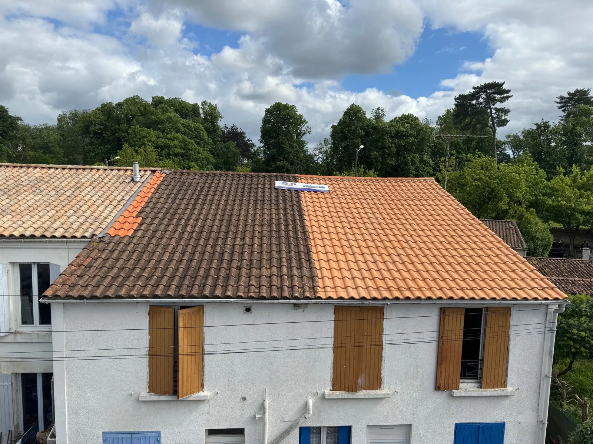
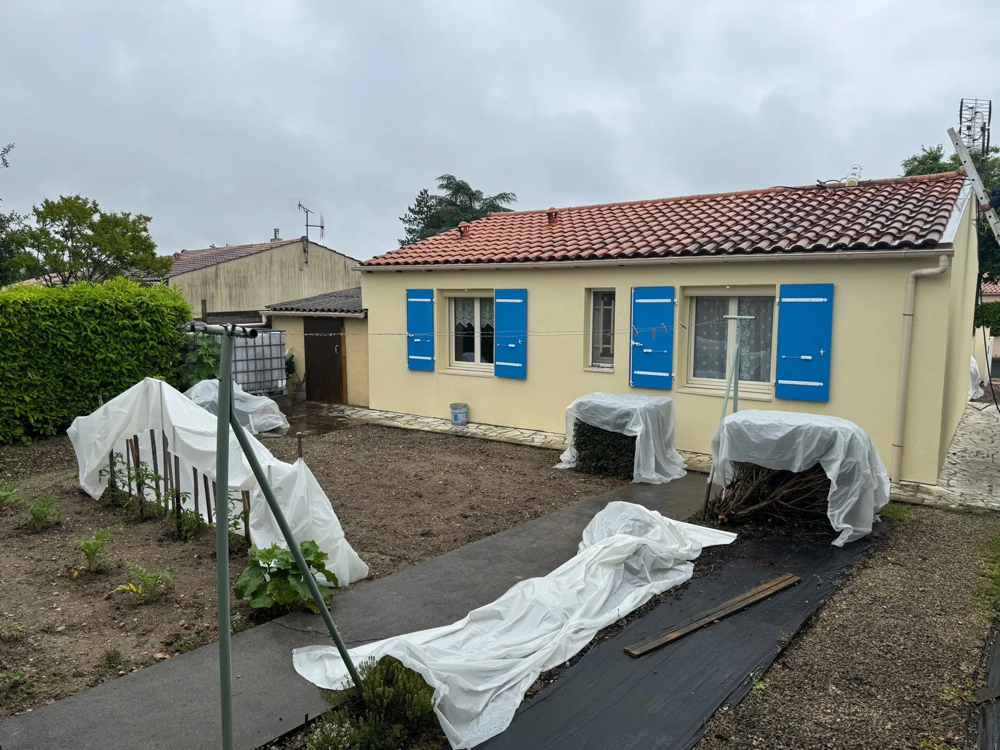
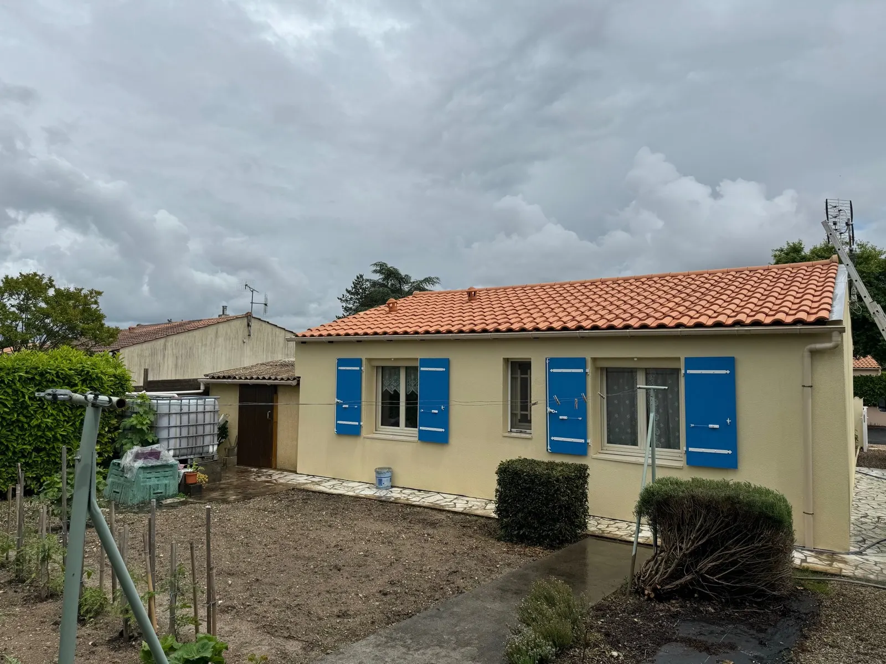
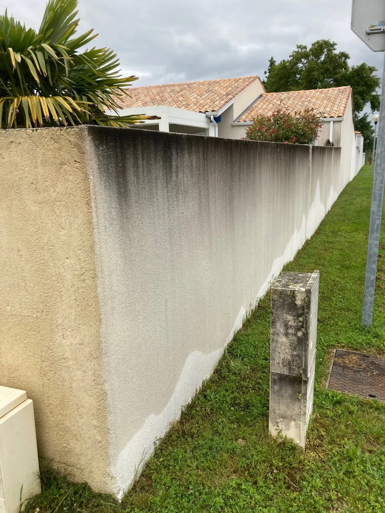
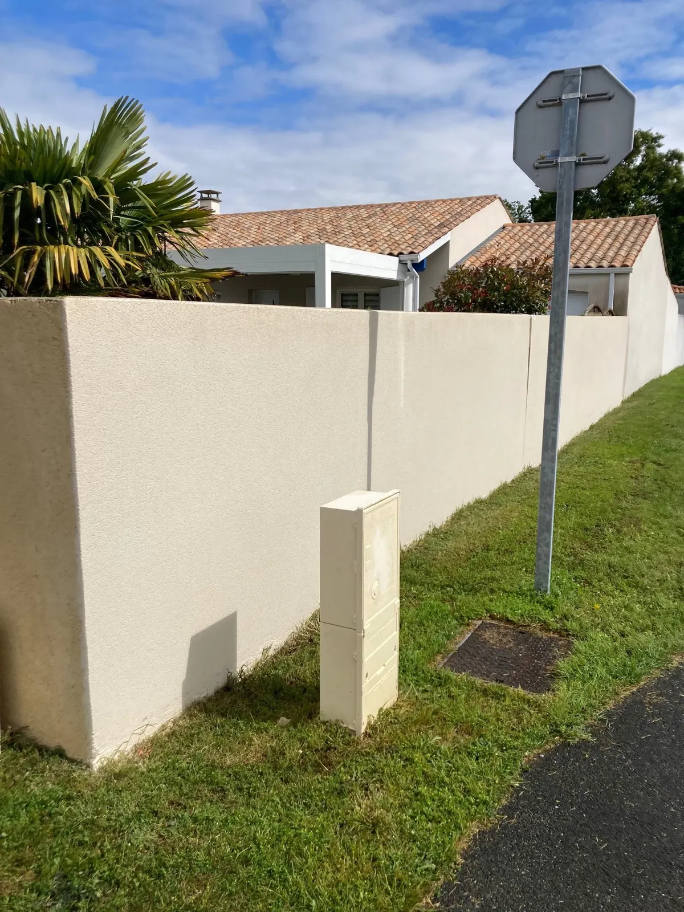
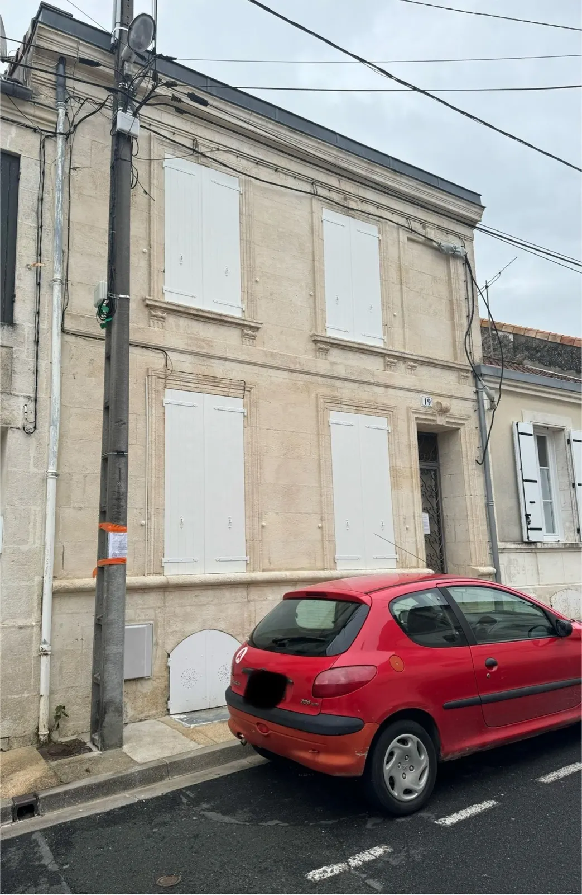
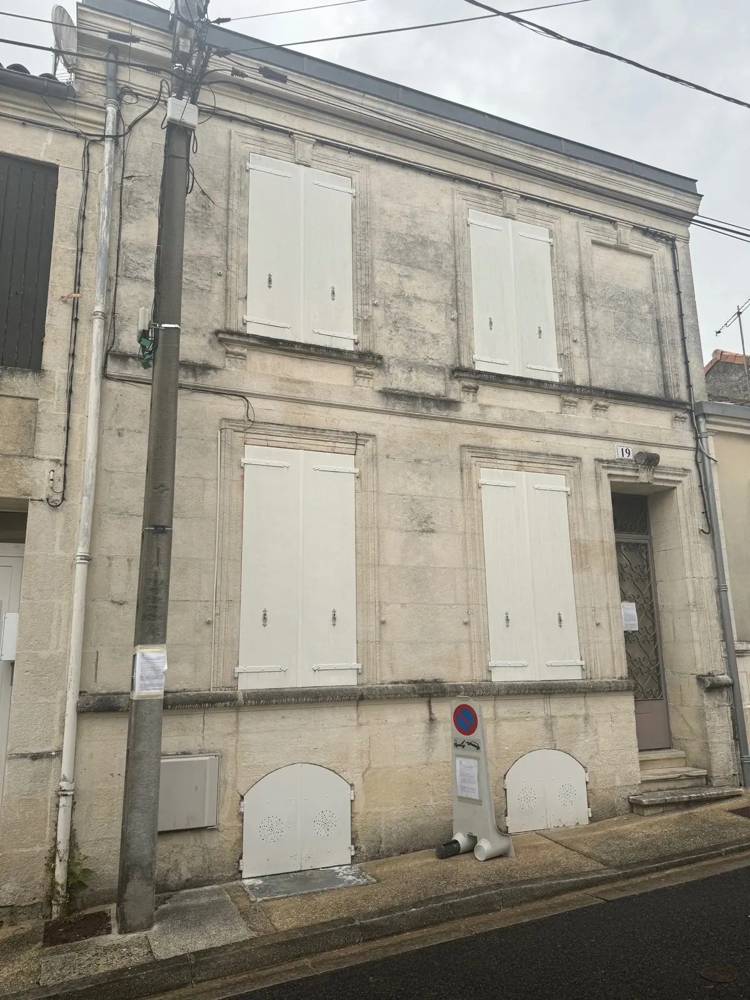

Avant AprèsToitures et Façades de France, Saint-Porchaire
Au lieu de dépenser pour remplacer, protégez et économisez.
Nous sommes spécialisés dans l'imperméabilisation des supports : toiture, façade, isolation. Que ce soit pour un démoussage ou une rénovation totale, nous vous accompagnons de la première prise de contact à la réception du chantier.
- Près de 20 ansd'expérience en rénovation de maisons individuelles
- Imperméabilisationdes supports, notre spécialité
- Devis gratuitsous 48 h
- Saint-Porchaire3 rue du Stade, du lundi au samedi
Votre maison est votre havre de paix.
Notre expertise dans les domaines de la toiture, de la façade et de l'amélioration énergétique est au service de nos clients : protéger votre maison et vous aider à économiser de l'énergie.
Démoussage de toiture ou rénovation totale, tout est mis en œuvre pour assurer un accompagnement complet.
Notre mot d'ordre : trouver la solution !
La toiture, c'est le chapeau de la maison.
Avec les années, les intempéries et la pollution, les toitures se dégradent de plus en plus vite : lichen, mousse, tuiles poreuses qui perdent leur grain, traces blanches, tuiles qui éclatent avec le gel.
La suite ? Une charpente humide, une isolation endommagée, des infiltrations, des dégâts à l'intérieur.
S'il est en bon état, la maison le sera. Les solutions existent.


- 1
Nettoyage, démoussage
Économique, il agit sur les végétaux et les micro-organismes, en surface comme en profondeur. Vous aurez un toit sain et propre.
- 2
Hydrofuge incolore
L'alternative au changement de couverture : il imperméabilise et durcit les tuiles en profondeur pour vous éviter de les changer, et retarde les végétaux.
- 3
Hydrofuge coloré
Idéal sur les tuiles béton qui perdent leur éclat : il leur redonne leur couleur d'origine. Changement de teinte possible, sous réserve de validation technique.
- 4
Changement de couverture
Quand il est trop tard pour rénover : du simple faîtage au remplacement complet, avec un accompagnement technique et financier.
Si la toiture est le chapeau, les enduits sont le manteau.
L'humidité, le froid, la chaleur salissent les enduits (algues vertes, coulures de rouille, traces noires), les fissurent, et rendent la maison plus fraîche : on consomme plus d'énergie l'hiver. Là aussi, les solutions existent.
Nettoyage, démoussage
Les enduits sont assainis en profondeur et la maison est plus jolie.
Hydrofuge incolore
Il imperméabilise et solidifie l'enduit sans modifier l'aspect des murs, et retarde le retour des algues.
Hydrofuge coloré
Remise en état des murs, large choix de couleurs, et l'humidité ne stagne plus dans l'enduit.
Peinture thermique
Jusqu'à 5 degrés de gagnés à l'intérieur par fortes chaleurs, moins de déperditions l'hiver.




L'isolation, l'écharpe de la maison.
La chaleur monte, c'est physique ! L'humidité et les courants d'air dégradent l'isolation : les combles sont la principale source de déperdition de chaleur d'une maison. Un diagnostic est fait dans les combles pour préparer le soufflage d'un matelas épais, conforme aux réglementations thermiques en vigueur.
Laine minérale
Issue du verre ou de la roche volcanique, un isolant économique qui a fait ses preuves depuis des décennies.
Laine de coton
Un isolant biosourcé, issu de chutes de vêtements recyclées, pour un meilleur confort hiver comme été.
Énergie
Pompe à chaleur, climatisation, panneaux solaires : qu'est-ce que c'est, comment cela fonctionne, combien ça coûte et surtout combien ça rapporte ? Autant de questions auxquelles nous avons les réponses, avec un accompagnement technique et financier.
Ponctualité, efficacité, respect de l'environnement et contact agréable ! Vu le sérieux, je recommande cette entreprise !
« Équipe dynamique et sérieuse. Travail propre, à recommander sans aucune crainte. »
« Nous recommandons cette entreprise pour son travail sérieux, propre et rapide. »
Avis de clients publiés sur notre site.
Contactez-nous
Pour plus d'informations ou pour demander un devis gratuit en 48 h, écrivez-nous : dites-nous ce qui vous préoccupe, toiture, façade, isolation ou énergie.
contact@tf-france.fr